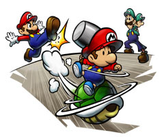
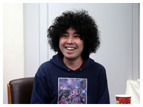
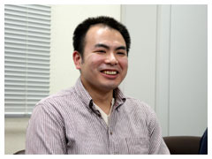

--今回は過去と現在を行ったり来たりしますね。

窪田：元はと言えば、４つのボタンを使うからという意味でスタートしたんですが。ベビィたちが出るということで、彼らはマリオとルイージの“昔の姿”だから、同時に出てくるのはおかしいだろうと。じゃあ大人のキャラがタイムスリップするという設定にしたら、同時に出てもおかしくない。キャラクターで言うと、前回のキャラクター性がユーザーさん達に受け入れられていたので、その延長線上で作りました。基本的に海外も意識して作っているので、そこから外れないようにということですね。
大谷：でも『タライ』は残りましたね。タライが落ちてくる場面があるんですけど、そこは残ってるんですよね。日本人しかわからない(笑)。
窪田：タライはどうしても残してくれとスタッフ言われたんで……(笑)。
大谷：海外では、マリオ達のアクションのデキの良さももちろんですが、シナリオ面でも面白さが評価されているようです。国が違っても、同じように笑ってくれるみたいですね。
--ビジュアルはどうですか？ 今回も色々な表情がありますけども。
野口：任天堂さんと上手く調整をして、チェックは相当数やりました。
堀田：まずは自由に描いて頂いて、うちの監修チームが細かくチェックしていました。
野口：２Ｄでドットなので、やっぱり限界はありますから、そこは理解して頂いたと思いますが。
大谷：見ていて思ったんですが、本当に細かいチェックなんですよ。でもその細かさで、マリオらしさ・ルイージらしさがちゃんと出るんですね。そこは「なるほど」と感心しました。

野口：あちらのチェックから上がって来たものを見ると「なるほど」という感じだったんですね。ドットなので限界まで頑張っています。
大谷：僕は最近はずっと３Ｄのゲームを担当していたので、久々に２Ｄのゲームを見たのですが、ビジュアルが滑らかで驚きましたね。アニメの滑らかさ、動きの面白さ、楽しさをぜひ見て欲しいと思います。
原木：２Ｄの綺麗さ、アニメの滑らかさがアルファドリームの売りなので、持ち味として活かさなければと思いまして。３Ｄはほかにも色々ありますけど、うちは２Ｄだろうと。でも３Ｄもせっかく使えるから、効果的に使ってはいるんです。ボス戦、アイテムアタックなんかでは３Ｄを使ってますよ。そこだけいかにも３Ｄだと浮いてしまうので、見た目ではわかりづらいんですけどね。
--背景はどうでしょう。
野口：前回よりバージョンアップさせました。任天堂さんからもらったイラストがあるので、それに近づけるように作りました。全体的に手書き風の絵だったので、そうなるように。

原木：デザイナーと「内部的にはＲＡＭでこの程度使っていいよ」とか研究してました。地形に関しても、前はゲームゲームしていましたが、今回は例えば45°の坂道にしても、自然に表現できたかなと。アニメにしてもハードの制約にあまり縛られずに表現できたので、やりがいがありました。
窪田：そこに音を載せたら、処理が重くなって危険でした。ボイスも４人分になったので、メモリが危なかったですね(笑)。
原木：ＤＳになって出来ることが増えたんです。今回はマイク、タッチペンなどありますが、だからってなんでもかんでも詰め込んだらダメだと。それを使うからこそ面白くなければならない。マリオは「ＡＢボタンで動いてなんぼ」ですから、ＤＳだからって無理に詰め込まないことにしました。
窪田：２画面だと、２つあるとどっちを見たらいいかわからなくなりますよね。目線を移動するためのガイド的なものがないといけない。プレゼンを通過した年は、そういった企画の基盤を固めることに費やしてしまいました。
原木：それで、プログラム等は今年に入ってからになりました。
--任天堂側の要望はどういったものですか？
堀田：任天堂としては、『マリオはマリオ、ルイージはルイージである』という部分を大切にしてもらいました。今回はアクションのわかりやすさ、特に４人がアクションするので、誰が動けるのかをわかりやすくと要望しました。
窪田：２作目なので、基本的な所は遊べばわかるだろうと思い込んでいたんですけど、任天堂さんから「初めての人でもわかるようにチュートリアル的な要素を入れてください」と言われたんですね。見落としていました。
大谷：操作も、任天堂が大事にしているインタラクティブ性を入れてもらいたいと思いまして。僕がプロジェクトに入ったのは中盤辺りからなんですが、全体を通してのバランス、敵キャラの難易度、手に取ってもらえるようにするためのチュートリアルなどに重点をおいてチェックさせてもらいました。
|
|